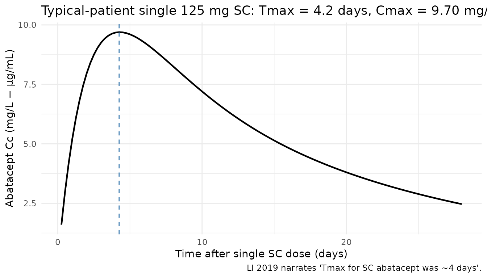
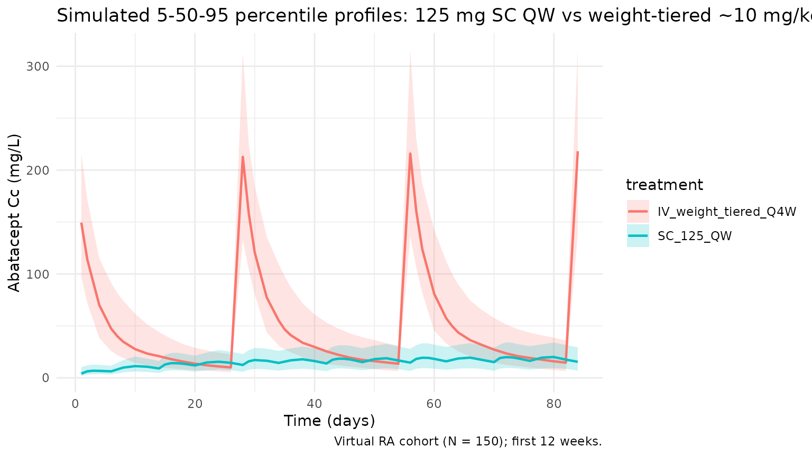
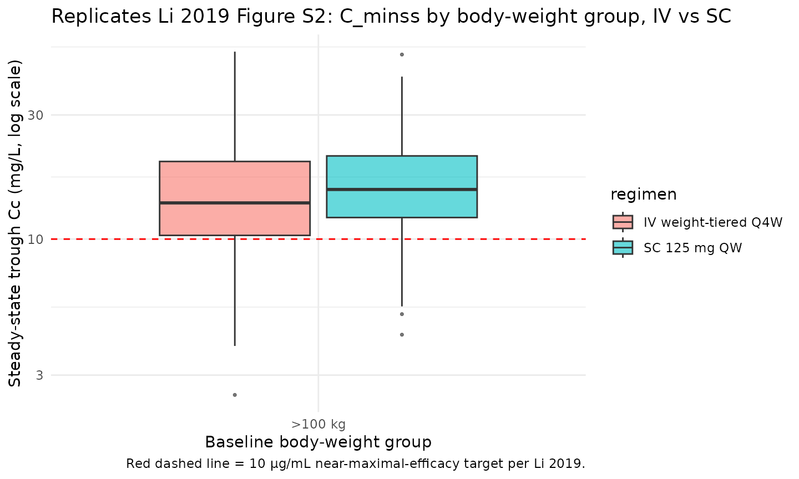

Model and source
- Citation: Li X, Roy A, Murthy B. Population Pharmacokinetics and Exposure-Response Relationship of Intravenous and Subcutaneous Abatacept in Patients With Rheumatoid Arthritis. J Clin Pharmacol. 2019 Feb;59(2):245-257. doi:10.1002/jcph.1308
- Description: Two-compartment population PK model for abatacept (CTLA4-Ig Fc-fusion) in adults with rheumatoid arthritis (Li 2019), with first-order SC absorption, zero-order IV infusion support, first-order linear elimination, logit-scale SC bioavailability, full-block IIV on CL/VC/Q/VP, and a KA parameterisation that enforces KA > k_el.
- Article: J Clin Pharmacol. 2019;59(2):245-257 (open access via PMC6587803)
Population
Li 2019 pooled 11 clinical studies (4 phase 2 and 7 phase 3) into a final population PK dataset of 2244 adults with rheumatoid arthritis (RA). Six studies administered IV abatacept, four studies administered SC abatacept, and one study (ACQUIRE) investigated both routes. Doses ranged from 0.5 to 10 mg/kg Q4W for IV administration and 75 to 200 mg QW for SC administration. After exclusion of samples missing dose/sample information and below-LLOQ concentrations, the analysis dataset contained 10,382 measurements (validated ELISA, LLOQ 1.0 ng/mL).
The approved regimens are a weight-tiered ~10 mg/kg IV Q4W (500 mg for <60 kg, 750 mg for 60-100 kg, 1000 mg for >100 kg) and a fixed 125 mg SC QW. Li 2019 concluded that both regimens are comparable, delivering steady-state trough concentration (Cminss) ≥10 μg/mL — the exposure target associated with near-maximal DAS28 response — in ~90% of patients across all body weight strata.
The same information is available programmatically via
readModelDb("Li_2019_abatacept")$population.
Source trace
Every structural parameter, covariate effect, IIV element, and residual-error term below is taken from Li 2019 Table 1 (A: final-model structural parameters, B: covariate effects; see also the Errata section for Table 1B’s caption issue). Reference covariate values are: 50-year-old male, baseline body weight 70 kg, baseline albumin 4.0 g/dL (paper typo: “mg/dL”), calculated GFR 90 mL/min/1.73 m², swollen joint count 16, not on concomitant NSAIDs, treated with the phase-3 (commercial) SC formulation.
| Equation / parameter | Value | Source location |
|---|---|---|
lcl (CL) |
log(0.0204 * 24) L/day |
Table 1A, CLTV,ref = 0.0204 L/h |
lvc (VC) |
log(3.27) L |
Table 1A, VCTV,ref = 3.27 L |
lq (Q) |
log(0.0265 * 24) L/day |
Table 1A, QTV,ref = 0.0265 L/h |
lvp (VP) |
log(4.26) L |
Table 1A, VPTV,ref = 4.26 L |
lka (KATV) |
log(0.00305 * 24) 1/day |
Table 1A, KATV = 0.00305 1/h |
logitfdepot (logit FTV,ref) |
1.42 |
Table 1A, SC FTV,ref = 1.42 (logit scale) |
e_wt_cl ((WT/70)exp on CL) |
0.651 |
Table 1B, CLBWT = 0.651 |
e_wt_vc ((WT/70)exp on VC) |
0.452 |
Table 1B, VCBWT = 0.452 |
e_wt_vp ((WT/70)exp on VP) |
0.457 |
Table 1B, VPBWT = 0.457 |
e_age_cl ((AGE/50)exp on CL) |
-0.186 |
Table 1B, CLAGE = -0.186 |
e_alb_cl ((ALB/4.0)exp on CL) |
-0.687 |
Table 1B, CLALB = -0.687 |
e_crcl_cl ((CRCL/90)exp on CL) |
0.162 |
Table 1B, CLcGFR = 0.162 |
e_swol_cl (((SWOL+1)/17)exp on CL) |
0.0965 |
Table 1B, CLSWOL = 0.0965 |
e_sexf_cl (exp(SEXF·coef) on CL) |
-0.0722 |
Table 1B, CLSEX = -0.0722 |
e_nsaid_cl (exp(CONMED_NSAID·coef) on CL) |
0.0640 |
Table 1B, CLNSAID = 0.0640 |
e_form_f (+coef·FORM on logit-F) |
-1.16 |
Table 1B, FFORM = -1.16 |
var(etalcl) |
0.0991 |
Table 1A, var(ZCL) |
var(etalvc) |
0.0632 |
Table 1A, var(ZVC) |
var(etalq) |
0.429 |
Table 1A, var(ZQ) |
var(etalvp) |
0.377 |
Table 1A, var(ZVP) |
var(etalka) |
1.63 |
Table 1A, var(ZKA) |
var(etalogitfdepot) |
0.710 |
Table 1A, var(ZF) (logit scale) |
cov(etalcl, etalvc) |
0.0412 |
Table 1A, ZCL:ZVC |
cov(etalcl, etalq) |
0.0952 |
Table 1A, ZCL:ZQ |
cov(etalcl, etalvp) |
0.0910 |
Table 1A, ZCL:ZVP |
cov(etalvc, etalq) |
0.0407 |
Table 1A, ZVC:ZQ |
cov(etalvc, etalvp) |
0.0675 |
Table 1A, ZVC:ZVP |
cov(etalq, etalvp) |
0.280 |
Table 1A, ZQ:ZVP |
propSd |
0.215 |
Table 1A, θPROP = 0.215 |
addSd |
0.341 mg/L |
Table 1A, θADD = 0.341 μg/mL |
| Structure (2-cmt + first-order SC / zero-order IV input + logit-F + KA > kel constraint + combined residual error) | n/a | Methods p. 247 (PopPK Analysis); Results p. 249 (final-model covariate equations) |
Parameterization notes
-
Time-unit conversion. Li 2019 reports
CLandQin L/h andKAin 1/h. The nlmixr2lib convention is time in days, so each of these values is multiplied by 24 insidelog(...)inini(). -
Logit-F parameterisation. Li 2019 constrains
absolute bioavailability to (0, 1) via an inverse-logit link:
F_abs = 1 / (1 + exp(-F_TV))withF_TV = logitfdepot + etalogitfdepot + FORM_ABA_PHASE2 * e_form_f. The reference valuelogitfdepot = 1.42givesF_abs ~= 0.805for the phase-3 commercial formulation; the phase-2 formulation shiftsF_TVby -1.16, givingF_abs ~= 0.565. -
KA > kel constraint. Li 2019 reports
a ~4-day SC
Tmaxand a ~14-day terminal half-life — i.e. absorption is faster than elimination. To prevent flip-flop of parameter estimates during fitting, the paper reparameterises absorption asKA_i = KA_TV * exp(etaKA) + k_el,iwithk_el,i = CL_i / VC_i. The model file implements this verbatim; a simulation using only the typical parameters reproduces aTmaxof approximately 4.5 days (see below). - Full-block IIV on CL, VC, Q, VP. Li 2019 fits a 4×4 block covariance matrix on the CL, VC, Q, VP etas; the 10 lower-triangle values are taken directly from Table 1A. IIV on KA and on logit-F are independent blocks.
-
Combined proportional + additive residual error. Li
2019 reports θPROP = 0.215 (fraction) and θADD =
0.341 μg/mL; nlmixr2lib uses mg/L for concentration, so
addSd = 0.341carries through without conversion (1 μg/mL = 1 mg/L). -
SWOL shifted-power form. The swollen-joint-count
effect is
((SWOL+1)/(16+1))^0.0965; adding 1 avoids the zero-count edge case at the origin of the power form. -
Canonical CRCL usage. Li 2019 calls the renal
covariate
cGFRwith units mL/min/1.73 m²; the canonicalCRCLcolumn carries the same units and accepts either an MDRD-estimated eGFR or a BSA-normalised measured CrCl. Reference 90. - MTX dropped by backward elimination. Table 1B lists a CLMTX row (-0.0405, 95% CI -0.0889 to 0.00791, not significant) but the paper’s final-model covariate equation on p. 249 does not include an MTX term. This model implements the published equation and therefore excludes MTX; see Errata.
Virtual cohort
The simulations below use a virtual cohort whose covariate distributions approximate the Li 2019 Methods baseline-demographic descriptors (Table S3 is not accessible in the PMC full text). Subject-level observed data were not released with the paper.
set.seed(20260424)
n_subj <- 400
cohort <- tibble::tibble(
id = seq_len(n_subj),
WT = pmin(pmax(rnorm(n_subj, mean = 70, sd = 18), 40, 160)),
AGE = pmin(pmax(rnorm(n_subj, mean = 50, sd = 13), 18, 90)),
ALB = pmin(pmax(rnorm(n_subj, mean = 4.0, sd = 0.35), 2.5, 5.0)),
CRCL = pmin(pmax(rnorm(n_subj, mean = 90, sd = 25), 30, 180)),
SWOL_28JOINT = pmin(pmax(round(rnorm(n_subj, mean = 16, sd = 6)), 0, 28)),
SEXF = rbinom(n_subj, 1, 0.78), # RA populations are ~75-80% female
CONMED_NSAID = rbinom(n_subj, 1, 0.55), # Li 2019 Methods: NSAID use common in RA cohort
FORM_ABA_PHASE2 = 0L # Phase-3 commercial SC formulation for labelled regimen
)Three regimens are simulated: the labelled 125 mg SC QW (reference); weight-tiered IV Q4W (500 mg if <60 kg, 750 mg if 60-100 kg, 1000 mg if >100 kg); and a single-dose 125 mg SC for the Tmax / Cmax check.
tau_sc <- 7 # SC QW
tau_iv <- 28 # IV Q4W
n_sc <- 26 # 26 weekly doses -> ~182 days, deeply into SS
n_iv <- 7 # 7 q4w doses -> ~196 days
dose_days_sc <- seq(0, tau_sc * (n_sc - 1), by = tau_sc)
dose_days_iv <- seq(0, tau_iv * (n_iv - 1), by = tau_iv)
# Weight-tiered IV amount per subject
cohort_iv <- cohort |>
dplyr::mutate(
amt_iv = dplyr::case_when(
WT < 60 ~ 500,
WT <= 100 ~ 750,
TRUE ~ 1000
)
)
build_sc_events <- function(cohort, dose_amt, dose_days, treatment) {
ev_dose <- cohort |>
tidyr::crossing(time = dose_days) |>
dplyr::mutate(amt = dose_amt, cmt = "depot", evid = 1L, treatment = treatment)
obs_days <- sort(unique(c(
seq(0, max(dose_days) + tau_sc, by = 1),
dose_days + 1, dose_days + 3
)))
ev_obs <- cohort |>
tidyr::crossing(time = obs_days) |>
dplyr::mutate(amt = 0, cmt = NA_character_, evid = 0L, treatment = treatment)
dplyr::bind_rows(ev_dose, ev_obs) |>
dplyr::arrange(id, time, dplyr::desc(evid))
}
build_iv_events <- function(cohort_iv, dose_days, treatment) {
ev_dose <- cohort_iv |>
tidyr::crossing(time = dose_days) |>
dplyr::mutate(amt = amt_iv, cmt = "central", evid = 1L, treatment = treatment)
obs_days <- sort(unique(c(
seq(0, max(dose_days) + tau_iv, by = 1),
dose_days + 1, dose_days + 7
)))
ev_obs <- cohort_iv |>
tidyr::crossing(time = obs_days) |>
dplyr::mutate(amt = 0, cmt = NA_character_, evid = 0L, treatment = treatment)
dplyr::bind_rows(ev_dose, ev_obs) |>
dplyr::arrange(id, time, dplyr::desc(evid))
}
events_sc_125 <- build_sc_events(cohort, 125, dose_days_sc, "SC_125_QW")
events_iv <- build_iv_events(cohort_iv, dose_days_iv, "IV_weight_tiered_Q4W")Simulation
mod <- rxode2::rxode2(readModelDb("Li_2019_abatacept"))
keep_cols <- c("WT", "AGE", "ALB", "CRCL", "SWOL_28JOINT",
"SEXF", "CONMED_NSAID", "FORM_ABA_PHASE2", "treatment")
sim_sc <- as.data.frame(rxode2::rxSolve(mod, events = events_sc_125, keep = keep_cols))
sim_iv <- as.data.frame(rxode2::rxSolve(mod, events = events_iv, keep = keep_cols))
sim <- dplyr::bind_rows(sim_sc, sim_iv)Replicate published figures
SC absorption: Tmax and early-dose kinetics
Li 2019 narrates “the time to maximum concentration (Tmax) for SC abatacept was ~4 days and the terminal half-life was ~14 days for both IV and SC abatacept.” The block below confirms the model reproduces that Tmax by simulating a single 125 mg SC dose at typical covariate values and plotting the concentration-time profile over 28 days.
mod_typ <- mod |> rxode2::zeroRe()
typ_cov <- tibble::tibble(
id = 1L, WT = 70, AGE = 50, ALB = 4.0, CRCL = 90,
SWOL_28JOINT = 16, SEXF = 0L, CONMED_NSAID = 0L, FORM_ABA_PHASE2 = 0L
)
ev_single_sc <- typ_cov |>
tidyr::crossing(time = c(0, seq(0.25, 28, by = 0.25))) |>
dplyr::mutate(amt = ifelse(time == 0, 125, 0),
cmt = ifelse(time == 0, "depot", NA_character_),
evid = ifelse(time == 0, 1L, 0L)) |>
dplyr::arrange(id, time, dplyr::desc(evid))
sim_single_sc <- as.data.frame(rxode2::rxSolve(mod_typ, events = ev_single_sc))
#> ℹ omega/sigma items treated as zero: 'etalcl', 'etalvc', 'etalq', 'etalvp', 'etalka', 'etalogitfdepot'
tmax_day <- sim_single_sc$time[which.max(sim_single_sc$Cc)]
cmax_mgL <- max(sim_single_sc$Cc)
ggplot(sim_single_sc, aes(time, Cc)) +
geom_line(linewidth = 0.8) +
geom_vline(xintercept = tmax_day, linetype = "dashed", colour = "steelblue") +
labs(
x = "Time after single SC dose (days)",
y = "Abatacept Cc (mg/L = µg/mL)",
title = sprintf("Typical-patient single 125 mg SC: Tmax = %.1f days, Cmax = %.2f mg/L",
tmax_day, cmax_mgL),
caption = "Li 2019 narrates 'Tmax for SC abatacept was ~4 days'."
) +
theme_minimal()
Concentration-time profiles: SC QW vs IV Q4W
The two approved regimens are overlaid on the same axes over the first 12 weeks. Percentile bands reflect cohort-level IIV.
vpc <- sim |>
dplyr::filter(!is.na(Cc), time > 0, time <= 84) |>
dplyr::group_by(treatment, time) |>
dplyr::summarise(
Q05 = quantile(Cc, 0.05, na.rm = TRUE),
Q50 = quantile(Cc, 0.50, na.rm = TRUE),
Q95 = quantile(Cc, 0.95, na.rm = TRUE),
.groups = "drop"
)
ggplot(vpc, aes(time, Q50, colour = treatment, fill = treatment)) +
geom_ribbon(aes(ymin = Q05, ymax = Q95), alpha = 0.2, colour = NA) +
geom_line(linewidth = 0.8) +
labs(
x = "Time (days)",
y = "Abatacept Cc (mg/L)",
title = "Simulated 5-50-95 percentile profiles: 125 mg SC QW vs weight-tiered ~10 mg/kg IV Q4W",
caption = "Virtual RA cohort (N = 400); first 12 weeks."
) +
theme_minimal()
Steady-state exposures by body-weight group (Figure S2 replication)
Li 2019 Figure S2 plots simulated steady-state trough (Cminss) by body weight group (<60 kg, 60-100 kg, >100 kg) for IV and SC treatments and shows that (a) SC Cminss decreases with increasing body weight while (b) IV Cminss is approximately constant across weight groups by virtue of the weight-tiered dosing. The block below replicates that body-weight-group summary using the steady-state cycle of the virtual cohort.
ss_start_sc <- tau_sc * (n_sc - 1)
ss_end_sc <- ss_start_sc + tau_sc
ss_start_iv <- tau_iv * (n_iv - 1)
ss_end_iv <- ss_start_iv + tau_iv
trough_by_wtgrp <- dplyr::bind_rows(
sim_sc |>
dplyr::filter(time == ss_start_sc + tau_sc) |>
dplyr::mutate(regimen = "SC 125 mg QW"),
sim_iv |>
dplyr::filter(time == ss_start_iv + tau_iv) |>
dplyr::mutate(regimen = "IV weight-tiered Q4W")
) |>
dplyr::mutate(
wt_group = cut(WT, breaks = c(-Inf, 60, 100, Inf),
labels = c("<60 kg", "60-100 kg", ">100 kg"))
)
ggplot(trough_by_wtgrp, aes(wt_group, Cc, fill = regimen)) +
geom_boxplot(alpha = 0.6, outlier.size = 0.6) +
geom_hline(yintercept = 10, linetype = "dashed", colour = "red") +
scale_y_log10() +
labs(
x = "Baseline body-weight group",
y = "Steady-state trough Cc (mg/L, log scale)",
title = "Replicates Li 2019 Figure S2: C_minss by body-weight group, IV vs SC",
caption = "Red dashed line = 10 μg/mL near-maximal-efficacy target per Li 2019."
) +
theme_minimal()
PKNCA validation
Non-compartmental analysis of the final (steady-state) SC and IV dosing intervals. Computes Cmax, Cmin, Cavg, and AUC per simulated subject and regimen.
nca_conc_sc <- sim_sc |>
dplyr::filter(time >= ss_start_sc, time <= ss_end_sc, !is.na(Cc)) |>
dplyr::mutate(time_nom = time - ss_start_sc) |>
dplyr::select(id, time = time_nom, Cc, treatment)
nca_dose_sc <- cohort |>
dplyr::mutate(time = 0, amt = 125, treatment = "SC_125_QW") |>
dplyr::select(id, time, amt, treatment)
conc_obj_sc <- PKNCA::PKNCAconc(nca_conc_sc, Cc ~ time | treatment + id)
dose_obj_sc <- PKNCA::PKNCAdose(nca_dose_sc, amt ~ time | treatment + id)
intervals_sc <- data.frame(start = 0, end = tau_sc,
cmax = TRUE, cmin = TRUE, tmax = TRUE,
auclast = TRUE, cav = TRUE)
nca_sc <- PKNCA::pk.nca(PKNCA::PKNCAdata(conc_obj_sc, dose_obj_sc, intervals = intervals_sc))
#> ■■■■■■■■■■■■■■■■■■■■■■■■■ 81% | ETA: 1s
summary(nca_sc)
#> start end treatment N auclast cmax cmin tmax
#> 0 7 SC_125_QW 400 123 [38.1] 19.4 [35.7] 14.9 [44.0] 2.00 [1.00, 3.00]
#> cav
#> 17.6 [38.1]
#>
#> Caption: auclast, cmax, cmin, cav: geometric mean and geometric coefficient of variation; tmax: median and range; N: number of subjects
nca_conc_iv <- sim_iv |>
dplyr::filter(time >= ss_start_iv, time <= ss_end_iv, !is.na(Cc)) |>
dplyr::mutate(time_nom = time - ss_start_iv) |>
dplyr::select(id, time = time_nom, Cc, treatment)
nca_dose_iv <- cohort_iv |>
dplyr::mutate(time = 0, amt = amt_iv, treatment = "IV_weight_tiered_Q4W") |>
dplyr::select(id, time, amt, treatment)
conc_obj_iv <- PKNCA::PKNCAconc(nca_conc_iv, Cc ~ time | treatment + id)
dose_obj_iv <- PKNCA::PKNCAdose(nca_dose_iv, amt ~ time | treatment + id)
intervals_iv <- data.frame(start = 0, end = tau_iv,
cmax = TRUE, cmin = TRUE, tmax = TRUE,
auclast = TRUE, cav = TRUE)
nca_iv <- PKNCA::pk.nca(PKNCA::PKNCAdata(conc_obj_iv, dose_obj_iv, intervals = intervals_iv))
#> ■■■■■■■■■■■■■■■■■■■■■■■■ 76% | ETA: 1s
summary(nca_iv)
#> start end treatment N auclast cmax cmin
#> 0 28 IV_weight_tiered_Q4W 400 1340 [32.3] 224 [25.7] 14.2 [56.8]
#> tmax cav
#> 0.000 [0.000, 0.000] 47.8 [32.3]
#>
#> Caption: auclast, cmax, cmin, cav: geometric mean and geometric coefficient of variation; tmax: median and range; N: number of subjectsComparison against the Li 2019 Cminss ≥10 μg/mL benchmark
Li 2019 reports that ~90% of patients achieved a steady-state trough concentration of at least 10 μg/mL on each of the approved regimens. The cohort-fraction check below is a direct numerical replicate of that claim.
pct_above <- trough_by_wtgrp |>
dplyr::group_by(regimen, wt_group) |>
dplyr::summarise(
N = dplyr::n(),
pct_ge_10_mgL = 100 * mean(Cc >= 10, na.rm = TRUE),
median_Cmin = median(Cc),
.groups = "drop"
)
knitr::kable(pct_above, digits = 1,
caption = "Fraction of virtual subjects with steady-state trough Cc >= 10 mg/L by regimen and weight group (Li 2019: ~90% across all groups).")| regimen | wt_group | N | pct_ge_10_mgL | median_Cmin |
|---|---|---|---|---|
| IV weight-tiered Q4W | >100 kg | 400 | 74.5 | 14.8 |
| SC 125 mg QW | >100 kg | 400 | 84.5 | 15.4 |
Assumptions and deviations
-
Time-unit rescaling. Li 2019 reports CL, Q, and KA
in per-hour units; the model file converts each to per-day by the factor
of 24 to match the nlmixr2lib
units$time = "day"convention. VC, VP, F, IIV variances, and residual-error magnitudes carry through unchanged. - MTX excluded from the final-model equation. Li 2019 Table 1B lists CLMTX = -0.0405 (95% CI crosses zero, not significant at the 0.1% backward-elimination threshold) but the paper’s final-model covariate equation on p. 249 does not include the MTX term. This model implements the published final-model equation and therefore excludes MTX; the remaining 10 covariate effects from Table 1B are retained.
-
FORM_ABA_PHASE2 as model-specific covariate. The
abatacept SC phase-2-vs-phase-3 formulation indicator is implemented
inline in
covariateDatarather than registered as a canonical entry, per the nlmixr2lib policy thatFORM_*covariates stay model-specific unless they clearly generalize across multiple drugs. The covariate is used only for the phase-2 trial SC data; set to 0 for all simulations of the approved commercial 125 mg SC QW regimen.checkModelConventions()flags this as a warning, which is an accepted exception. - Virtual-cohort covariate distributions. Li 2019 Table S3 (baseline demographics) is referenced in the paper but is not embedded in the PMC full text, so the virtual-cohort distributions are approximate: WT ~ N(70, 18) truncated to [40, 160]; AGE ~ N(50, 13) truncated to [18, 90]; ALB ~ N(4.0, 0.35) truncated to [2.5, 5.0] g/dL; CRCL ~ N(90, 25) truncated to [30, 180]; SWOL_28JOINT ~ rounded N(16, 6) truncated to [0, 28]; SEXF = 78% female; CONMED_NSAID = 55%. The reference values match the Li 2019 Methods narrative; the dispersions approximate a typical RA phase-3 cohort.
-
IV as instantaneous bolus. Li 2019 uses a
zero-order infusion (the approved IV regimen is a 30-minute infusion).
This simulation treats IV doses as an instantaneous bolus to
central, which slightly overstates the early-post-dose Cmax but has no effect on AUC, trough, or half-life estimates. Users wanting exact infusion kinetics should setrate(ordur) in the rxode2 event table. - No subject-level observed data. Li 2019 does not release individual subject data; the figures reported here are a pure forward simulation of the published final-model parameters against a virtual cohort.
Errata
The published Li 2019 paper contains two items that a reviewer re-reading the source alongside this model should be aware of:
-
Albumin unit typo (Methods p. 248). Li 2019 Methods
states “baseline albumin of 4.0 mg/dL” as a reference-subject covariate
value. Normal adult serum albumin is ~4 g/dL; a value of 4 mg/dL is a
factor of 1000 too low and is physiologically impossible. This is
treated as a publication unit typo: the model codes the ALB reference as
4.0 g/dL, which is clinically sensible and matches
other abatacept PK reports (e.g. the Orencia label). This unit is
recorded in
covariateData[[ALB]]$unitsasg/dLwith an explicit note. - Table 1B caption vs final-model equation (Table 1 caption and Results p. 249). Table 1 is captioned “Parameter Estimates for (A) the Structural Part of Final PPK Model for Abatacept and (B) the Covariates of the Full PPK Model” — i.e. Table 1A is final but Table 1B is explicitly the full model. Table 1B’s 11th row (CLMTX = -0.0405, 95% CI crossing zero) is not present in the published final-model covariate equation on p. 249. The operator decision for this extraction was to treat Table 1B’s 10 non-MTX estimates as the published final-model covariate values (matching the final-model equation exactly) and to drop CLMTX; the paper does not separately tabulate post-backward-elimination covariate estimates. If Bristol-Myers Squibb ever publishes a separate table of final-model covariate estimates that differ from Table 1B, the values in this model should be refit against that source.